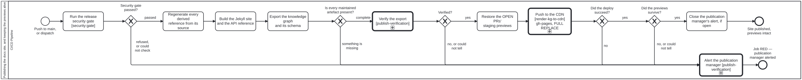

Generated from
cat-harness/processes/sdlc/docs-site-publish.bpmnbygen-processes-viz.ts— do not edit here. All processes
Process_DocsSite · strict · 9 step(s)
Publish the docs site to gh-pages, verify the export before the deploy, and keep the open pull requests’ previews alive across a deploy that replaces the whole branch. PUBLISHING THE SITE IS A FULL REPLACE, AND THAT IS THE WHOLE REASON THIS IS DRAWN. Bean 7yvd. The workflow is 432 lines and its shape is not legible from them: what a reader needs to know is that gh-pages is REPLACED wholesale, so anything on that branch which this build did not produce is gone unless something puts it back.
That is bean plj1 — every open pull request’s review preview deleted by an unrelated merge, silently, for months. The repair is the two steps either side of the publish, and they are a PAIR: Restore the open PRs' staging previews copies them into the publish directory before the replace, and Did the previews survive? reads the deployed ref afterwards. Neither is sufficient alone — a restore nobody verifies is a restore that can silently stop working, which is exactly how the original defect lasted.
BOTH GATEWAYS REFUSE RATHER THAN WARN, and the second is three-state: it fails on a preview that is missing AND on a check that could not tell, because a verification that has gone blind must not read as permission. Same rule as ci-health — could-not-determine is never rendered as clean.
Regenerate every derived reference from its source stands for five separate generators (schema reference, skill instruction pages, content-backed docs, the translation index, the BPMN renders). They are drawn as one task on purpose: they are independent of each other and sequential only because a single job runs them, so five boxes would assert an ordering the workflow does not have.
Mechanical throughout. There is no human lane, which is what makes build-pipeline the right lane rather than a convenient one. VERIFIED AND ALERTED (bean vigi, owner 2026-09-23): the export is verified BEFORE the deploy and blocks it on anything but a pass; and every step after the publish button that fails — an incomplete export, a verification failure, a failed deploy, a lost preview — goes through one alert to the publication manager. A clean publish closes that alert.

| lane | role | what it does here |
|---|---|---|
| CI/CD Pipeline | build-pipeline |
Before it will even attempt the risky part, GW_Complete can refuse outright and end at End_Refused if a maintained artefact is missing — so an incomplete build never reaches Task_Publish’s full replace at all, which is a harder stop than the restore/verify pair further down the same lane makes for a partial one. |
Every one of the 9 step(s) is documented.
| step | lane | skill / sub-process | what it does |
|---|---|---|---|
Run the release security gate [security:gate]Task_SecurityGate |
CI/CD Pipeline | security |
bun run cat security:gate, before anything is built (bean ieum, owner 2026-10-07: “security check before release”). It runs every security check this repository has by name: workflow injection, secret leaks, lockfile and toolchain pins, QA reviewer permission, materialised fixity, and third-party action SHA pinning outside staging-only workflows. Each is reported as pass, fail or unknown. A blocking fail OR unknown refuses the publish, because could-not-check is never clean. Until this step existed, no publish or merge process named any security check; they ran only inside the CI gate set. |
Regenerate every derived reference from its sourceTask_Regenerate |
CI/CD Pipeline | — | Regenerate every derived reference from its source before building: skill schema and instruction pages, content-backed docs pages, the graph projections and viewers, the handler and translation indexes, and the rendered BPMN diagrams. The published site is built from sources, never from committed copies that may be stale. |
Build the Jekyll site and the API referenceTask_Build |
CI/CD Pipeline | — | Compose the docs layers, build the Jekyll site, mount instance-rendered content, and generate the TypeScript API reference with TypeDoc. |
Export the knowledge graph and its schemaTask_Export |
CI/CD Pipeline | — | Export the knowledge graph and its schema into the published tree, then check every maintained artefact is present and no block-level markup escaped. The unpublished graph typologies are stripped on export. |
Verify the exportCall_Verify |
CI/CD Pipeline | calls Verify the export before it is deployedpublish-verification |
Process_PublishVerification: the verifier set over the built tree, before anything is deployed. Owner, 2026-09-23: before deployment, blocking. |
Restore the OPEN PRs’ staging previewsTask_Restore |
CI/CD Pipeline | feature-staging |
Copy every OPEN pull request’s STAGING/ |
Push to the CDN [render-kg-to-cdn] gh-pages, FULL REPLACETask_Publish |
CI/CD Pipeline | calls Render a Knowledge Graph to a CDNrender-kg-to-cdn |
THIS SITE IS ONE INSTANCE OF THE GENERAL STEP (owner, 2026-09-30: gh-pages is “one specific tool of general ‘publish to CDN’”). Process_RenderKgToCdn, entered with the tree this build already rendered and verified, the site root as the publication root URL, and GitHub Pages as the target — so its gh-pages Tool pushes. Here that push is a FULL REPLACE of the gh-pages branch: anything on it this build did not produce is gone unless the restore put it back, which is why the restore and the survival check either side of this call stay in THIS process rather than in the general one. The call returns the push’s status and message (the gh-pages merge commit and the QA result); a status other than pushed takes the no branch of Did the deploy succeed?. |
Close the publication manager’s alert, if openTask_CloseAlert |
CI/CD Pipeline | — | A clean publish resolves whatever the last failure raised: close the open publication-manager tracking issue with a comment naming this run. |
Alert the publication managerCall_Alert |
CI/CD Pipeline | calls Alert the publication managerpublish-verification |
Process_PublishAlert — the ONE alert every failing step after the publish button goes through, whichever step it was. |
Every one of the 5 decision(s) is documented.
| decision | what decides it | branches |
|---|---|---|
Security gate passed?GW_Secure |
passed only on exit 0, meaning no blocking check failed or could not be run. Advisory findings (dependency advisories, staging-only pinning) never block, and they are not cleared either. |
passed → Regenerate every derived reference from its source refused, or could not check → Alert the publication manager |
Is every maintained artefact present?GW_Complete |
Answered by the export: is every maintained artefact present? something is missing goes to the alert and publishes nothing, because a full replace would ship the gap; complete goes on to verify the export. |
something is missing → Alert the publication manager complete → Verify the export |
Verified?GW_Verified |
Answered by the verification sub-process’s end: yes only when every in-scope document passed. no, or could not tell blocks the deploy and alerts — an unverified release is not a verified one. |
yes → Restore the OPEN PRs’ staging previews no, or could not tell → Alert the publication manager |
Did the deploy succeed?GW_Deployed |
Answered by the deploy step itself. no goes to the alert: a failed deploy after the publish button is exactly the failure the owner asked to be told about. yes checks the previews survived. |
yes → Did the previews survive? no → Alert the publication manager |
Did the previews survive?GW_Survived |
Asked after the full-replace publish: are the open PRs’ previews still there? yes closes any open alert and ends published; no, or could not tell goes to the alert, because a preview that cannot be confirmed is treated as deleted. |
yes → Close the publication manager’s alert, if open no, or could not tell → Alert the publication manager |